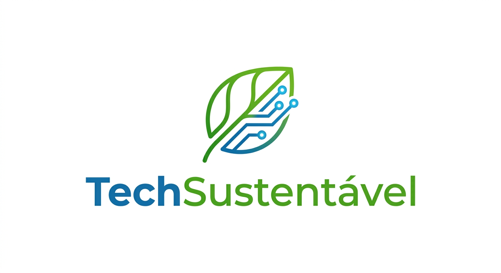
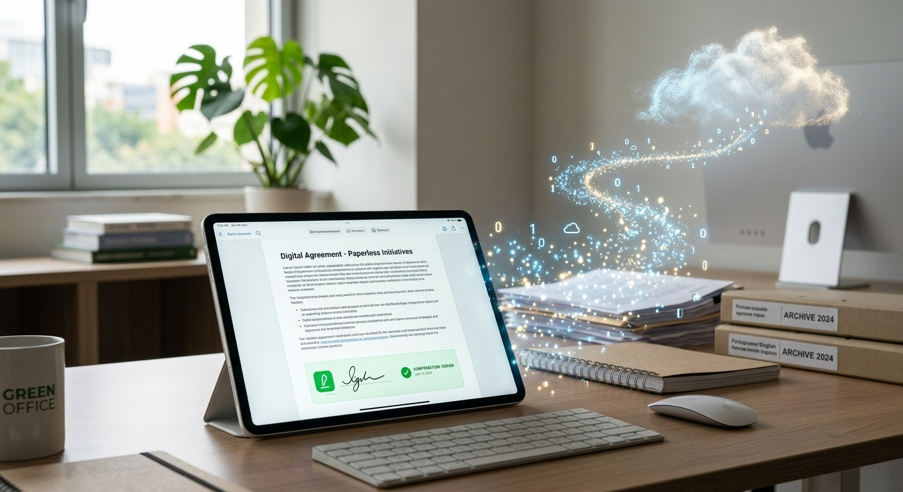
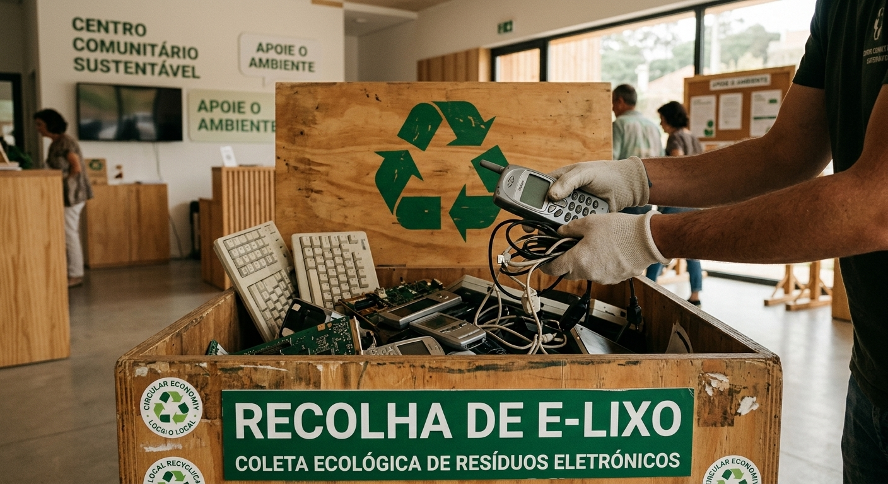
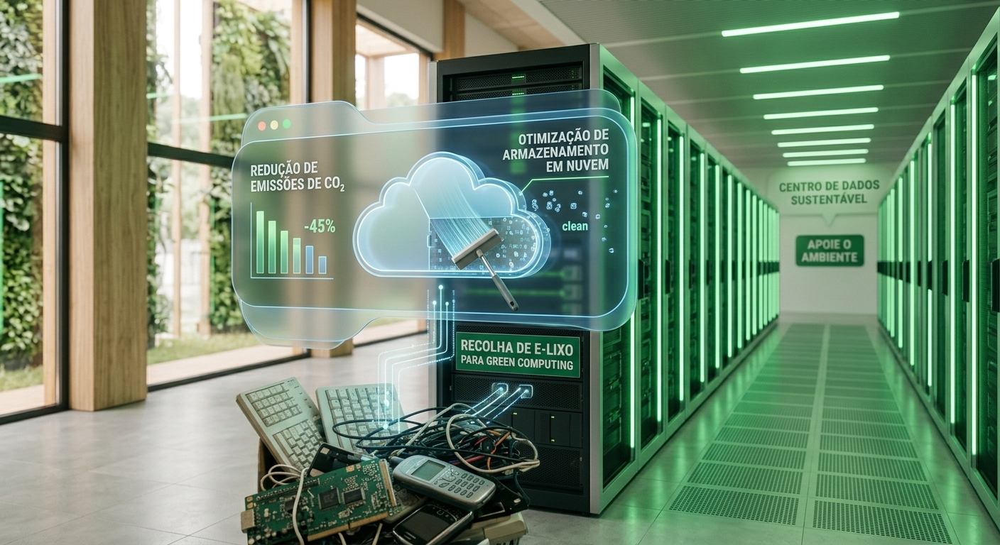
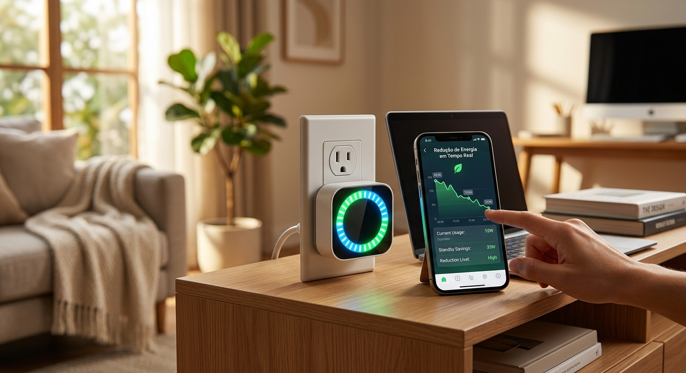
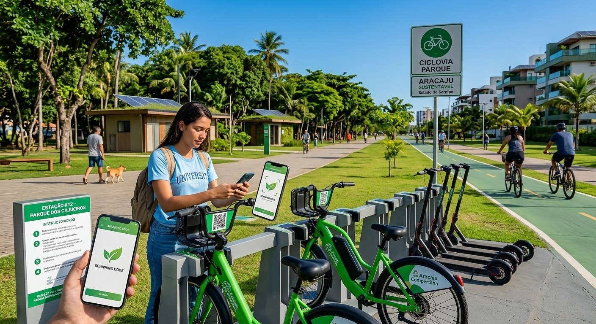

Explicação: Substituir documentos impressos por arquivos digitais em nuvem, assinaturas eletrônicas e comprovantes digitais tanto em casa quanto nas empresas.

Explicação: Armazenar aparelhos eletrônicos antigos sem uso e levá-los a postos de coleta especializados, evitando que substâncias tóxicas contaminem o solo.

Explicação: Limpar e-mails antigos, arquivos duplicados e fotos sem uso armazenadas na nuvem, reduzindo a pegada de carbono dos data centers que demandam energia constante para manter esses dados.

Explicação: Utilizar tomadas inteligentes com temporizadores para desligar equipamentos em stand-by fora do horário de uso em escritórios e residências.

Explicação: Utilizar plataformas de aluguel e compartilhamento de ferramentas, bicicletas e equipamentos, priorizando o acesso ao invés do acúmulo individual de bens materiais.